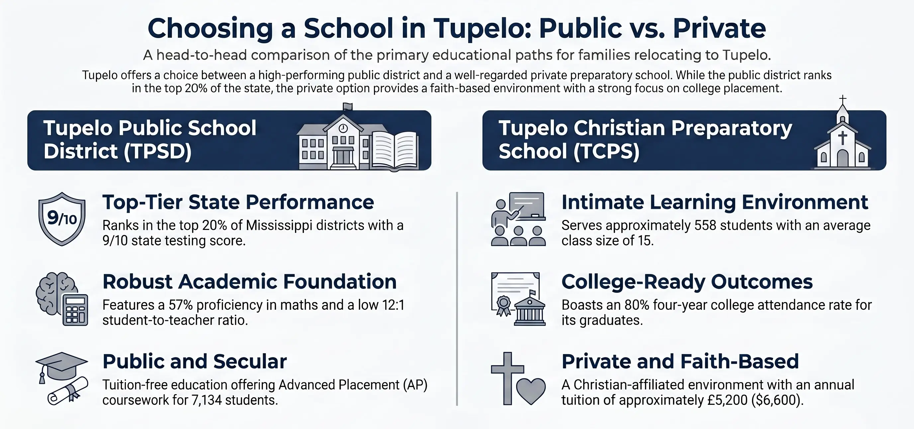
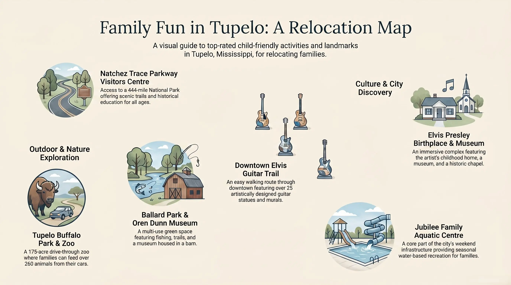

Every year, a steady stream of families arrives in Tupelo with the same set of questions. Their spouse just accepted a position at Toyota Motor Manufacturing Mississippi in Blue Springs, or a nursing role at North Mississippi Medical Center, or an engineering job at Hyperion Technology Group. The salary looks good. The cost of living numbers look promising. But the real questions — Where do the kids go to school? Is it safe? What do we do on weekends? — don't show up on any offer letter. This guide answers those questions directly, using current data and the kind of honest assessment that parents actually need before they commit to a move.
Tupelo is the county seat of Lee County and the largest city in northeast Mississippi, with a 2026 population of approximately 37,700. It sits about 100 miles southeast of Memphis and roughly 90 miles northwest of Birmingham — a location that gives it regional connectivity without the congestion of a metro area. For families used to larger cities, the scale takes adjustment. For families coming from rural areas or smaller towns, it registers as a real city with real amenities. The experience depends entirely on where you're starting from.
Why Families Move to Tupelo: The Employer Picture
The relocation story in Tupelo almost always begins with a job offer from one of a handful of anchor employers. Understanding who's hiring — and what the job market looks like — matters for families because it shapes everything from salary to community composition to the long-term stability of the area.
Toyota Motor Manufacturing Mississippi (TMMMS) is the most common reason families from outside the region end up in Tupelo. The plant, located in Blue Springs just north of the city, has produced Toyota Corollas since 2011 and employs more than 2,000 people. The facility has the capacity to build 170,000 vehicles per year, and has expanded multiple times since opening. Toyota is known for competitive wages, strong benefits, and a culture of internal advancement — the kind of stable, long-term employer that makes a relocation decision feel like a sound bet. The company also invested in a 15,000-square-foot workforce training and experience center adjacent to the plant, which speaks to its commitment to the region beyond just headcount.
North Mississippi Medical Center (NMMC) is the other major engine of relocation. NMMC is a 640-bed regional referral center — the largest private, not-for-profit hospital in Mississippi and one of the largest rural hospitals in America. It serves more than 730,000 people across 24 counties in north Mississippi, northwest Alabama, and portions of Tennessee. Its parent organization, North Mississippi Health Services, employs more than 6,900 people across a network of six hospitals, 50+ clinics, and nursing homes. NMMC is also a two-time recipient of the Malcolm Baldrige National Quality Award — a distinction that puts it among the most rigorously evaluated healthcare systems in the country. For nurses, physicians, therapists, and healthcare administrators, Tupelo offers a career trajectory that few cities of its size can match.
Hyperion Technology Group is Tupelo's clearest example of a homegrown tech success story. Founded in 2009 at the Renasant Center for IDEAs business incubator, the company now designs and builds custom electronic systems — embedded systems, signal processing, intelligent power and control systems — for government and commercial clients worldwide. Hyperion has expanded twice, growing to more than 60 employees in a purpose-fitted 48,000-square-foot facility on Commerce Street. It represents a small but meaningful segment of high-tech employment in the region, with systems engineering roles listed at $80,000–$128,500 annually. For families relocating in the tech sector, it's a reference point — not a Silicon Valley analog, but a well-regarded employer with a strong culture.
Beyond these three, the broader employer landscape includes Cooper Tires, Ashley Furniture, Hunter Douglas, General Atomics, and MTD Products — a manufacturing base that has given Tupelo economic resilience for decades. The Community Development Foundation, which coordinates economic development for the region, maintains one of the more active business attraction records in Mississippi.
Public vs. Private Schools: An Honest Comparison
This is the question that dominates conversations among families considering a move to Tupelo, and it deserves a direct answer: the public school district is genuinely better than Mississippi's average, but families accustomed to high-performing suburban districts in other states will need to calibrate their expectations. Here is what the numbers actually show.
Tupelo Public School District serves 7,134 students across 14 schools for the 2025-26 school year. Its average testing ranking is 9 out of 10, placing it in the top 20% of public school districts in Mississippi. Math proficiency runs at 57% — ten percentage points above the statewide average of 47%. Reading proficiency is 48%, compared to the state average of 42%. The student-to-teacher ratio is 12:1, lower than the Mississippi state average of 13:1. Tupelo High School ranks 38th within Mississippi and offers Advanced Placement coursework, with a 23% AP participation rate. These numbers do not compare to a top suburban district in, say, Tennessee or Georgia. But within Mississippi, they represent a real and meaningful advantage.
The district also benefits from its long relationship with the business community. Toyota's presence in the region was partly predicated on the strength of the local workforce pipeline, and Tupelo High School was highlighted in the original site selection process as a contributing factor. That connection between employer expectations and school quality has been a sustained source of investment and attention for the district.
| Metric | Tupelo Public School District | Mississippi State Average |
|---|---|---|
| Math Proficiency | 57% | 47% |
| Reading Proficiency | 48% | 42% |
| Student-Teacher Ratio | 12:1 | 13:1 |
| State Testing Ranking | 9/10 (Top 20%) | — |
| Spending Per Student | $11,593 | $12,074 |
| District State Rank (SchoolDigger) | 45th of 130 districts | Better than 65% of MS districts |
On the private school side, Tupelo's most prominent option is Tupelo Christian Preparatory School (TCPS), located in Belden just north of the city. TCPS is accredited through both ACSI and AdvancedEd, serves approximately 558 students from pre-K through 12th grade, and maintains an average class size of 15 students. It is faith-based with a Christian general affiliation. Tuition runs approximately $6,600 for the highest grade offered — a relatively accessible price point for a private option. About 80% of TCPS graduates go on to attend four-year colleges. Parent reviews consistently cite the school's family atmosphere and the quality of relationships students build there. For families who prioritize smaller class sizes, a faith-based environment, or an alternative to the public system, TCPS is the primary choice in the area.
Montessori School of Tupelo serves pre-K and kindergarten-aged children and is a member of the American Montessori Society. With a 7:1 student-to-teacher ratio and annual tuition of approximately $8,160, it caters to families seeking the Montessori philosophy for young children. It currently maintains a waiting list for its classrooms, which is worth noting for families planning ahead.
Practical Tip: How to Get Your Kids Enrolled in Tupelo Public Schools
- Determine your school zone first: Tupelo Public School District assigns students based on home address. Use the district's zone map (available at tuperloschools.net) to find your assigned schools before signing a lease or closing on a house.
- Required documents for enrollment: Proof of residency (utility bill or lease), birth certificate, immunization records, previous school records, and a completed enrollment form. Transfer students may also need withdrawal paperwork from the previous district.
- Contact the district office: Tupelo Public School District is located at 72 South Green Street, Tupelo, MS 38804 — phone (662) 841-8850. The district staff is responsive to out-of-state families navigating an unfamiliar process.
- TCPS applications: Tupelo Christian Preparatory School accepts rolling applications. Contact their admissions office at tcps.net or (662) 844-9345 to schedule a visit before committing.

Public vs. Private in Tupelo — the numbers that matter most to relocating families.
Top Daycares in Tupelo, MS: Where to Start Your Search
Childcare availability is one of the first logistical challenges families face when relocating, and Tupelo has a reasonable range of options across different philosophies and price points. The three daycares specifically asked about by families relocating to the area most frequently are Montessori School of Tupelo, Color My World, and Kids' World — all licensed by the state and each with a distinct character.
Montessori School of Tupelo
Location: 1955 Mount Vernon Road, Tupelo, MS 38804 • Ages: Pre-K through Kindergarten • Tuition: ~$8,160/year • Ratio: 7:1
AMS-affiliated and consistently cited by parents for its nurturing environment and genuine application of Montessori principles. One parent review describes it as a place where children are "exposed to different cultures, music, and art" and where teachers "truly care." The school currently maintains a waiting list for the 2025-26 school year — families who are planning ahead should submit an application before moving. Rolling admissions apply.
Color My World Child Care Academy
Location: 2045 McCullough Blvd, Tupelo, MS 38801 • Ages: Infant through school age • Hours: Mon–Fri, 6:00 AM–6:00 PM
Established in 1997 and state-licensed for up to 136 children, Color My World offers full-time educational daycare programs for preschool children as well as before- and after-school programs for older kids. It consistently ranks among the top childcare facilities in Yelp reviews for Tupelo. Its central location near North Mississippi Medical Center makes it particularly convenient for healthcare workers. The center participates in Mississippi's subsidized childcare program.
Kid's World Tupelo
Location: 1403 W Jackson St, Tupelo, MS 38801 • Ages: Infant through school age
A licensed childcare center that appears consistently in Tupelo's top-ranked childcare lists. Families should contact the center directly for current availability, pricing, and program details, as these change regularly. The West Jackson Street location provides good access to residential neighborhoods on the city's west side.
Beyond these three, Tupelo has a robust childcare ecosystem including Harrisburg Day School (4675 Cliff Gookin Blvd — a faith-based option near the northeast side), Pathway Montessori School (608 W Jefferson St — AMS-affiliated for infants to preschool), and the NMMC Child Care Center — an employer-sponsored option operated by North Mississippi Medical Center, a significant benefit for NMHS employees worth checking availability for at the time of hire.
Practical Tip: Navigating Tupelo Childcare as a Relocating Family
- Start early: High-quality centers like Montessori School of Tupelo maintain waiting lists. Contact your preferred centers 3–6 months before your planned move date.
- Verify state licensing: All Mississippi childcare providers should be licensed by the Mississippi Department of Health. You can verify a provider's license status at the Mississippi State Department of Health website.
- Ask about subsidy programs: Mississippi's Child Care Payment Program (CCPP) provides assistance for income-eligible families. Contact the Mississippi Department of Human Services at (800) 345-6347 to determine eligibility before you move.
- Check your employer first: If you're joining NMHS, ask HR specifically about the NMMC Child Care Center — employer-affiliated childcare can significantly reduce your wait time and cost.
Family Activities: What Weekends Look Like in Tupelo
This is the section that determines whether a city feels livable after the honeymoon period of a new job wears off. Tupelo is not Nashville or Atlanta. But for its size, it offers a remarkable variety of things to do with children — and several attractions that are genuinely singular rather than generic.
The Tupelo Buffalo Park & Zoo is the largest zoo in Mississippi at 175 acres, home to more than 260 animals. What makes it unusual is the drive-through format: families receive a bucket of food and feed buffalo, camels, zebras, alpacas, ostriches, and camels from the car. There is also a walk-through petting zoo, a giraffe barn, and more than 20 picnic areas. It is the kind of place that generates genuine family memories rather than just checked-box entertainment.
Elvis Presley Birthplace & Museum is a legitimately impressive site that repays more time than most visitors expect. The complex includes the small birthplace home, a full museum, a chapel, and the Assembly of God Church building where the Presley family worshipped. Admission runs $18 for adults, $8 for children ages 7–12, and is free for children under 7. Plan for 90 minutes rather than 20 — the storytelling about Elvis's Tupelo childhood is well-done and accessible to kids.
Ballard Park (689 Rutherford Rd) is the city's primary multi-use green space — an amphitheater, fishing areas, picnic spots, skating ramps, trails, and sports courts all in one location. It is where the Oren Dunn City Museum is also housed, a converted dairy barn that tells the history of Tupelo and Lee County with a charming 1870 Dogtrot Cabin on the grounds. Admission is $4 for adults and $2 for children — genuinely affordable family programming. The Natchez Trace Parkway Visitors Center, accessible from Tupelo, connects to a 444-mile National Park that consistently ranks among the most visited in the country and offers trails, history, and scenery that grow with kids as they age.
For downtown activity, the Elvis Guitar Trail features more than 25 guitars that have become permanent fixtures of Tupelo's cityscape, alongside murals and public art that make for an easy weekend afternoon. Tupelo holds a New Year's Eve celebration that locals describe as a genuinely family-inclusive event, with a children's ball drop at 8 PM alongside the adult festivities. The city's YMCA, youth sports leagues, and the Jubilee Family Aquatic Center provide the recurring weekend infrastructure that families need — the kinds of programs you sign kids up for each season.

Tupelo's family activity footprint — a surprising range for a city of 37,000.
Cost of Living for Families: What Your Dollar Actually Buys
The cost of living conversation is where Tupelo's pitch to relocating families becomes most concrete — and most genuinely compelling. According to March 2026 C2ER data, Tupelo is the cheapest major city in Mississippi, with a cost of living 19% below the national average and 7% below the state average. Housing is the area where the difference is most dramatic.
The median home value in Tupelo is approximately $201,300 — 18% below the national median. The median household income is $66,314. For a family of four buying a home, housing costs run roughly 27–33% below the national average. Utilities are 16% below average. Groceries and transportation are meaningfully cheaper as well. The practical implication for a family relocating from a higher cost-of-living area — Atlanta, Nashville, Dallas — is significant: the same income buys considerably more in Tupelo.
| Category | Tupelo vs. National Average | Tupelo vs. Jackson, MS |
|---|---|---|
| Overall Cost of Living | ~17–19% lower | Cheaper (Tupelo is lowest in MS) |
| Housing | 27–33% lower | Jackson housing ~50% cheaper than Tupelo |
| Utilities | 16% lower | Comparable |
| Groceries | 5% lower | Comparable |
| Transportation | 10% lower | Tupelo commutes are ~2 min shorter |
| Healthcare | 10% lower | Comparable |
| Median Home Value | $201,300 (18% below US median) | Jackson housing is significantly cheaper but with significant infrastructure caveats |
One note of calibration: the Jackson comparison above requires context. Jackson's housing costs are cheaper by a significant margin, but Jackson has well-documented infrastructure challenges — including a 2022 water crisis that left hundreds of thousands of residents without reliable clean water for weeks. For families evaluating Mississippi cities, the comparison is not apples-to-apples. Tupelo's infrastructure, utilities, and public services function reliably. That reliability has real value that does not show up in a cost-of-living index number.
Mississippi's income tax structure also bears mentioning. A plan signed into law in 2025 by Governor Reeves phases out Mississippi's individual income tax entirely by 2040, which will represent a meaningful long-term financial benefit for families who establish roots in the state.
Best Neighborhoods for Families in Tupelo
Tupelo's residential landscape is more varied than its population size suggests. The city has a range of neighborhood types — historic districts, lakefront communities, newer developments — and choosing the right one for your family's priorities requires understanding what each offers.
Joyner is consistently cited as one of the best neighborhoods for families in Tupelo. It features mid-century Colonial Revival homes near Rob Leake City Park, walkable streets, and proximity to highly rated schools. Residents describe it as clean, safe, and community-oriented. It is also reasonably convenient to the city's employment centers.
Park Hill offers diverse housing options — from more modest homes to larger properties — and access to highly rated schools including Carver Elementary. Residents enjoy recreational access to Gumtree Park and proximity to shopping and dining on North Gloster Street, Tupelo's main commercial corridor.
Lake Piomingo is the lakefront option — a peaceful community known for its namesake lake, offering fishing, boating, and large lots. It attracts a mix of families and retirees who prioritize space, nature access, and a quieter pace. Neighbors describe it as dog-friendly and walkable by Tupelo standards, with a genuine community feel.
Lee Acres features ranch-style and mid-century modern homes on spacious lots, lower crime risk than the national average, and proximity to highly rated schools and Lee Acres Park. It is a solid middle-ground choice for families looking for space without the lakefront premium.
On the crime picture: Tupelo receives a B+ grade from CrimeGrade.org, placing it in the 70th percentile for safety nationally — safer than 70% of U.S. cities. The cost of crime per resident is $238 per year, significantly below both the national average and Mississippi's state average. The northwest part of the city is generally considered safest. Crime, like in any city of Tupelo's size, is unevenly distributed by neighborhood — which makes the choice of specific area more important than city-level statistics alone.
What Long-Term Residents Say About Raising Kids Here
Data tells part of the story. The other part comes from the people who have already done what you're considering. Parents who have raised children in Tupelo consistently return to a few themes.
The first is Southern community infrastructure — the kind that manifests as neighbors who actually know each other, youth sports leagues that are well-organized and well-attended, and a church network (for families that use it) that provides social connective tissue that larger cities often lack. For families relocating from places where neighbors don't know each other's names, Tupelo's social fabric is a genuine adjustment — usually a welcome one.
The second theme is scale. Tupelo is small enough that kids grow up with continuity — the same classmates across multiple schools, teachers who know your family, coaches who remember your older sibling. For parents who valued that about their own upbringing, Tupelo reproduces it. For parents who want their children exposed to more diversity, more anonymity, and more urban stimulation, the scale creates friction.
The third is the healthcare situation, which is actually a point of pride for resident families rather than a concern. Having a Level II trauma center and a 640-bed regional referral center with more than 50 medical specialties in a city of 37,000 is genuinely unusual. Pediatric care, specialty care, and emergency services that families in comparable small cities drive an hour or more to access are available locally in Tupelo. For parents of children with medical needs or complex conditions, this is not a minor consideration.
The honest concerns that residents also raise: public transit is minimal, so car dependence is real, and families need two vehicles to function comfortably. Summer heat and humidity in Mississippi is not a detail — it shapes outdoor activity from June through September in ways that require adjustment if you're coming from a northern climate. And Tupelo's entertainment options, while solid for its size, thin out quickly for teenagers seeking urban-scale cultural programming. The city is working on its downtown, and the trajectory is positive — but families with older teenagers sometimes feel the ceiling.
Tupelo Family Relocation: Fast Facts for 2026
- Population: ~37,700 (Lee County, 2026)
- Median Household Income: $66,314
- Median Home Value: $201,300 (18% below national median)
- Overall Cost of Living: 17–19% below national average
- Public School District Rating: Top 20% in Mississippi, 9/10 test ranking
- Tupelo High School State Rank: 38th in Mississippi
- Major Employers: Toyota Manufacturing MS, North Mississippi Health Services (~6,900 employees), Hyperion Technology Group, Cooper Tires, Ashley Furniture
- Crime Grade: B+ — safer than 70% of U.S. cities
- Nearest Major Airports: Tupelo Regional Airport (TUP) locally; Memphis International (MEM) ~100 miles; Birmingham-Shuttlesworth (BHM) ~90 miles
- Healthcare: NMMC — largest private non-profit hospital in Mississippi; Level II Trauma Center; 50+ medical specialties
- Income Tax Trend: Mississippi phasing out individual income tax by 2040
Data reflects publicly available sources as of April 2026. Mississippi Lead does not accept payment for coverage of businesses, schools, or employers referenced in this guide.